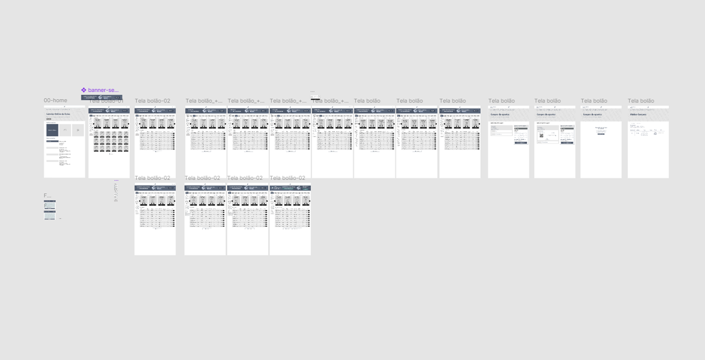
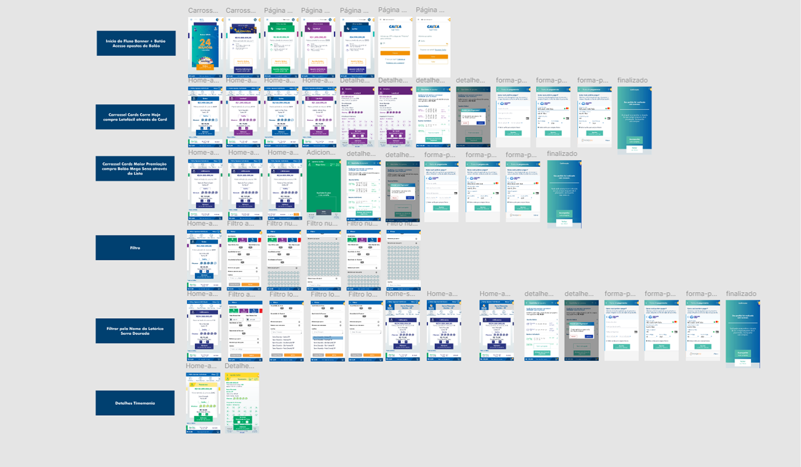

Início
Iniciamos com um onboarding detalhado junto aos Product Owners (POs). Esta fase foi crucial para absorver a visão do produto, entender os objetivos de negócio por trás da integração físico-digital dos bolões, definir o escopo inicial e alinhar as expectativas sobre os desafios e oportunidades do projeto.
Projeto
Nossa pesquisa mostrou uma forma de deixar a compra de bolões mais prática: conectar a facilidade da internet com as muitas lotéricas que já existem. Com a nova solução, o apostador usa sua localização para ver os bolões à venda nas lotéricas da sua vizinhança, tornando a compra mais rápida e acessível
Contexto
Realizamos uma análise aprofundada de benchmark, investigando soluções similares no mercado nacional e internacional. Utilizamos imagens e fluxos de interfaces concorrentes para identificar padrões, boas práticas, pontos fortes e oportunidades de diferenciação, focando em como outras plataformas lidavam com a conexão entre online e offline.
Teste de usabilidade
Realizamos testes de usabilidade com usuários representativos do público-alvo, utilizando o protótipo interativo para coletar feedback sobre a clareza, facilidade de uso e satisfação geral com a solução proposta. Apresentamos os protótipos e os resultados dos testes aos POs e stakeholders para refinamento e aprovação.
Problema
No modelo anterior, qualquer bolão gerado pela Lotérica que não fosse vendido representava um prejuízo financeiro direto para a própria casa lotérica.
A Complexidade do Negócio (Bastidores)
Para além da interface, este projeto exigiu imersão profunda em regras estatais e limitações técnicas. O desafio foi traduzir burocracia em usabilidade sem ferir o compliance da instituição.
üîí Compliance e Regula√ß√£o
Ao contrário de e-commerces comuns, o Bolão Lotérico opera sob legislação federal estrita. Cada interação do usuário precisou ser validada juridicamente para garantir que a "digitalização" não violasse as normas de exclusividade das casas lotéricas físicas.
⚙️ Integração com Legado
O maior nó técnico foi desenhar uma experiência que conversasse com os Terminais Financeiros Lotéricos (TFL). Tivemos que mapear fluxos de erro específicos para quando o sistema legado (offline) não respondesse ao app em tempo real, evitando quebras de transação.
üìç Travas de Geolocaliza√ß√£o
Implementamos regras de negócio baseadas em raio de atuação. O sistema impede a canibalização de vendas entre lotéricas vizinhas, exigindo lógica complexa de exibição de ofertas baseada na latitude/longitude do usuário versus o CNPJ da unidade.
üìä Viabilidade Financeira
Desenhei o painel de controle para os lotéricos considerando a gestão de risco. A interface precisava deixar claro quais cotas estavam "em aberto" para evitar prejuízo operacional para o franqueado caso o bolão não fosse 100% vendido até o sorteio.
O que rolou no projeto.
- Alinhamento Inicial e Imersão: Onboarding com os Product Owners (POs) para definir escopo, objetivos de negócio e os desafios da integração físico-digital para o Bolão Lotérico.
- Benchmark e Análise de Concorrência: Investigação de soluções de loterias online nacionais/internacionais e plataformas com funcionalidades de geolocalização para identificar boas práticas, fluxos de usuário e oportunidades de inovação.
- Análise da Plataforma Atual: Mapeamento do fluxo existente no site Loterias Online Caixa para identificar pontos de atrito e áreas de melhoria na busca e compra de bolões.
- Mapeamento de Jornada (User Flows): Definição dos fluxos principais para a nova funcionalidade, incluindo o "caminho feliz" de encontrar e comprar um bolão próximo, além de cenários alternativos.
- Ideação e Esboços: Geração de conceitos e soluções focadas na busca por proximidade, clareza das informações e simplificação do processo de compra.
- Prototipação Interativa: Criação de wireframes (baixa fidelidade) para estruturar a informação e protótipos navegáveis (alta fidelidade) no Figma para visualizar, testar e validar a experiência proposta.
- Validação com Usuários: Realização de testes de usabilidade com o protótipo para coletar feedback direto dos usuários e iterar sobre o design.
- Handoff para Desenvolvimento: Preparação e entrega de especificações visuais, fluxos documentados, componentes de UI e assets para a equipe de implementação, garantindo a fidelidade ao design proposto.
Benchmark
Realizamos uma análise de benchmark comparando a funcionalidade atual do Bolão Caixa com quatro plataformas de referência, incluindo outras loterias online e serviços que utilizam geolocalização para conectar usuários a pontos físicos. O objetivo foi identificar as melhores práticas e oportunidades de inovação em pontos-chave da jornada do usuário...
Amazon
Mega Loterias

TuLotero

Sorte Online
UserFlow
Utilizamos User Flows para mapear visualmente os passos que o usuário percorreria para encontrar e comprar um bolão próximo. Isso nos permitiu visualizar toda a jornada, identificar os pontos de decisão chave e garantir que o fluxo fosse o mais claro e intuitivo possível.

Wireframe de baixa fidelidade
Esta primeira versão do wireframe de baixa fidelidade foca exclusivamente na estrutura da informação e no fluxo principal do usuário. O objetivo aqui foi estabelecer a arquitetura e a navegação essenciais, livre das distrações do design visual, garantindo uma base sólida para a experiência.
Wireframe de Alta fidelidade
Avançando da estrutura validada nos wireframes de baixa fidelidade, a versão de alta fidelidade incorpora a camada visual completa do produto. Nesta fase, aplicamos a identidade visual definida (cores, tipografia, componentes) para criar uma representação fiel da interface final...
Importante: As telas apresentadas são um exemplo representativo. O projeto completo abrangeu os fluxos de todas as modalidades de loterias, incluindo variações para eventos sazonais como a mega-sena da virada, garantindo consistência em toda a plataforma.

Mobile
Considerando que a maioria dos usuários acessa a plataforma via celular, a experiência mobile foi uma prioridade estratégica. Todos os fluxos de alta fidelidade foram adaptados para dispositivos móveis, focando em uma navegação intuitiva, componentes de toque claros e legibilidade total, garantindo que o usuário pudesse completar uma aposta de forma rápida e acessível em qualquer tela.
Algumas telas mobile
Tela Inicial
Seleção de Bolão

Detalhe do Jogo
Filtros

Teste de Usabilidade
Nenhuma solução de UX está completa sem validação. Para garantir que a nova jornada de compra era intuitiva, conduzimos testes de usabilidade que simularam todo o fluxo. Os insights coletados foram cruciais para refinar detalhes da interface e confirmar que a conexão entre o app e a lotérica física estava clara para o usuário.

Fale Comigo!
Se você tem uma ideia, uma vaga ou só quer trocar uma figurinha, me manda uma mensagem.